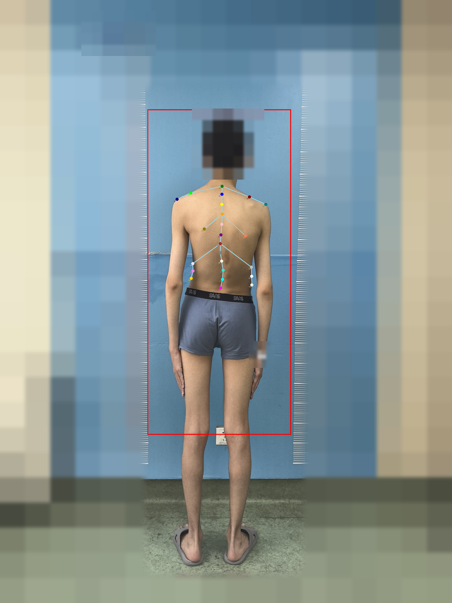
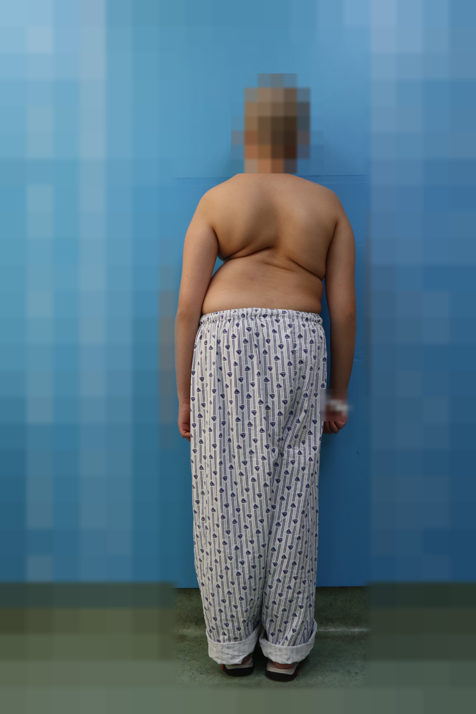
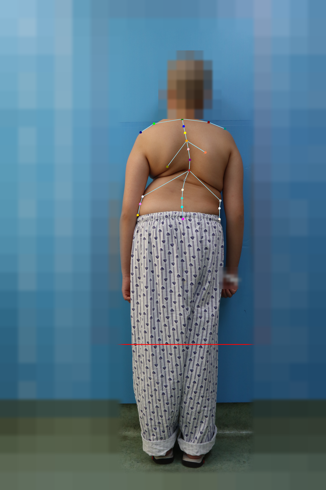
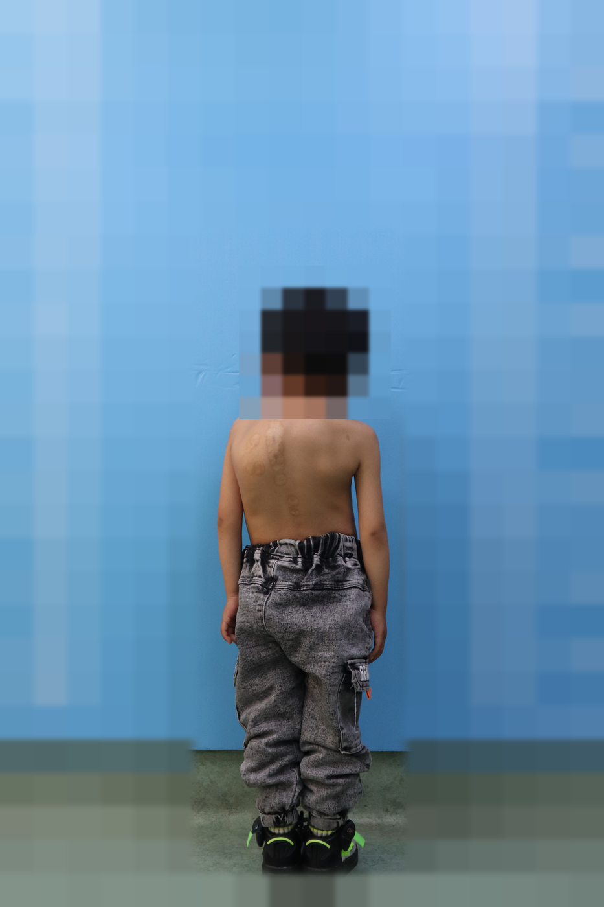
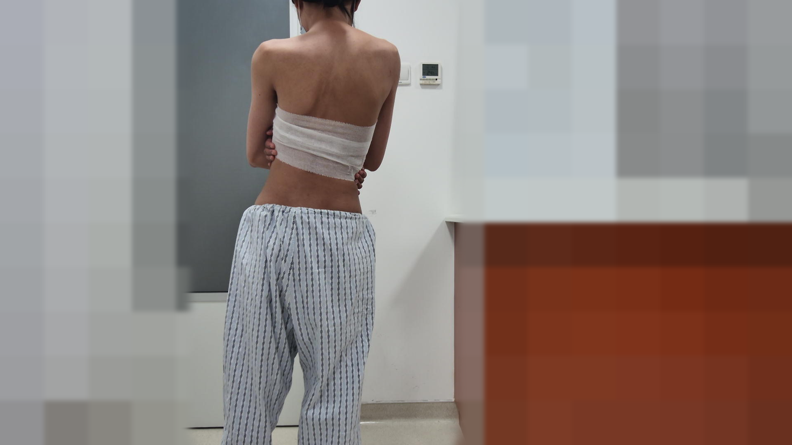
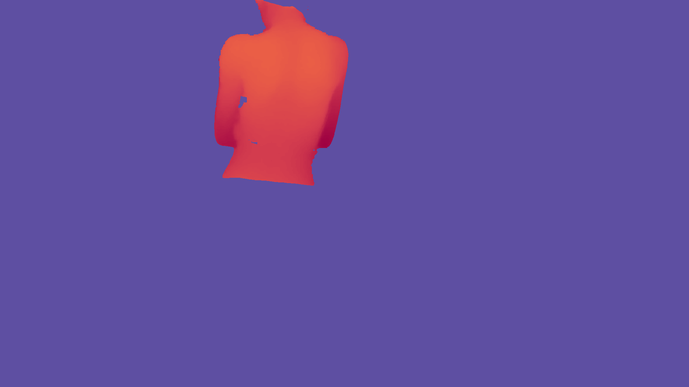
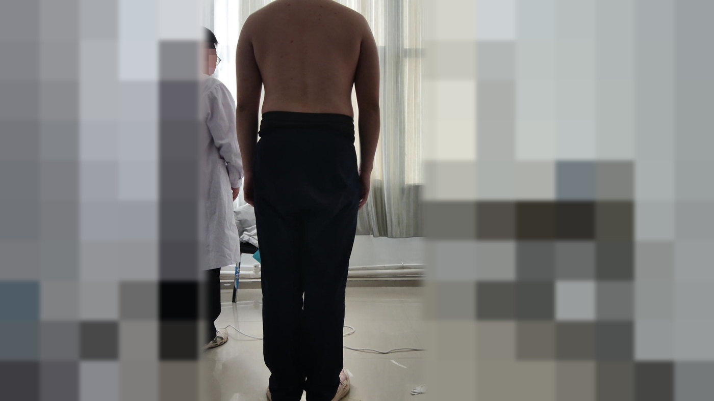
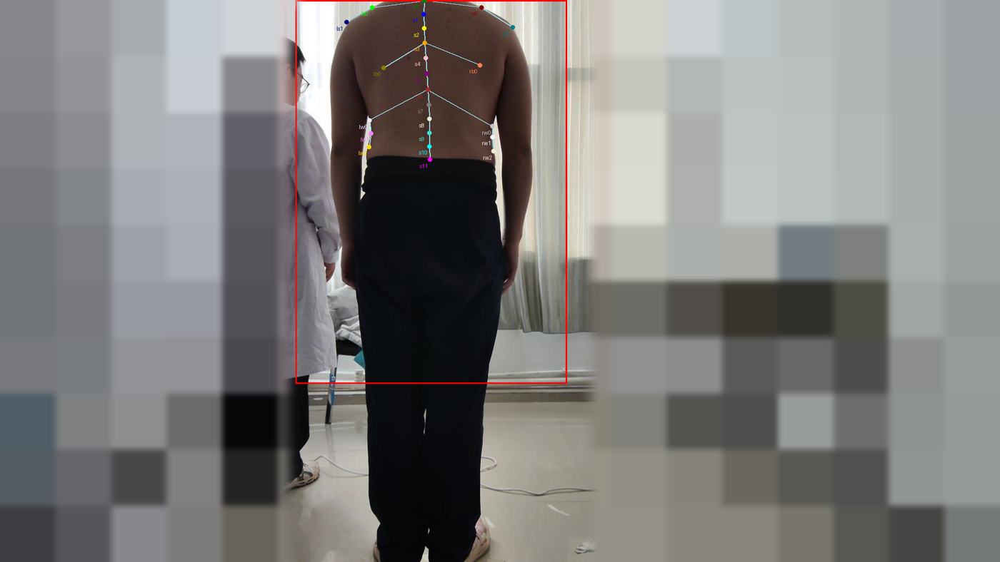

The first per-subject multimodal-paired clinical dataset for Adolescent Idiopathic Scoliosis (AIS) — pairing radiation-free surface modalities (RGB, multi-view video, depth, point cloud, 24-point keypoints) with the X-ray-derived clinical Cobb angle and a six-dimensional physician-confirmed diagnosis.
Every enrolled subject is one unique patient with one physician-confirmed diagnosis and one clinically-measured Cobb angle. Surface modalities are captured at a fixed standoff distance; the counts below make the per-modality subsets fully transparent — “annotated frames” (888) are distinct from “subjects” (133).
| Modality | Ground-truth / role | Count |
|---|---|---|
| RGB stills (posterior · lateral · forward-bend) | surface input | 133 subj |
| 24-point 2D keypoints | B1 target | 888 frames |
| Depth + point cloud (synchronized) | B3 / 3D-kpt input | 711 frames |
| Multi-view dynamic video (30 fps) | surface input | 62 subj |
| Six-dimensional diagnosis text | B2 / B3 target | 133 subj |
| Clinical Cobb angle (radiology report) | ground truth | 133 subj |
| Standing PA X-ray image (archived) | supplementary | 71 subj |
| Stratum | Cobb | Subjects |
|---|---|---|
| Very mild | < 10° | 29 |
| Mild | 10–20° | 35 |
| Moderate | 20–40° | 35 |
| Severe | > 40° | 34 |
| Symptomatic AIS (visible asymmetry / razor back) | 106 |
| Asymptomatic referral (school-screening positives) | 27 |
| subject | RGB image | RGB video | Depth image | Depth video | X-ray | CT | Diagnosis | Data source | Severity of scoliosis |
|---|---|---|---|---|---|---|---|---|---|
| S001 | ✓ | ✓ | ✓ | ✓ | · | · | ✓ | Free clinic | mild |
| S002 | ✓ | ✓ | ✓ | ✓ | · | · | ✓ | Free clinic | severe |
| S003 | ✓ | ✓ | ✓ | ✓ | · | · | ✓ | Free clinic | Very mild |
| S004 | ✓ | ✓ | ✓ | ✓ | · | · | ✓ | Free clinic | moderate |
| S005 | ✓ | ✓ | ✓ | ✓ | · | · | ✓ | Free clinic | severe |
| S006 | ✓ | ✓ | ✓ | ✓ | · | · | ✓ | Free clinic | severe |
| S007 | ✓ | ✓ | ✓ | ✓ | · | · | ✓ | Free clinic | severe |
| S008 | ✓ | ✓ | ✓ | ✓ | · | · | ✓ | Free clinic | severe |
| S009 | ✓ | ✓ | ✓ | ✓ | · | · | ✓ | Free clinic | severe |
| S010 | ✓ | ✓ | ✓ | ✓ | · | · | ✓ | Free clinic | moderate |
| S011 | ✓ | ✓ | ✓ | ✓ | · | · | ✓ | Free clinic | severe |
| S012 | ✓ | ✓ | ✓ | ✓ | · | · | ✓ | Free clinic | moderate |
| S013 | ✓ | ✓ | ✓ | ✓ | · | · | ✓ | Free clinic | severe |
| S014 | ✓ | ✓ | ✓ | ✓ | · | · | ✓ | Free clinic | severe |
| S015 | ✓ | ✓ | ✓ | ✓ | · | · | ✓ | Free clinic | severe |
| S016 | ✓ | ✓ | ✓ | ✓ | · | · | ✓ | Free clinic | moderate |
| S017 | ✓ | ✓ | ✓ | ✓ | · | · | ✓ | Free clinic | moderate |
| S018 | ✓ | ✓ | ✓ | ✓ | · | · | ✓ | Free clinic | mild |
| S019 | ✓ | ✓ | ✓ | ✓ | · | · | ✓ | Free clinic | severe |
| S020 | ✓ | ✓ | ✓ | ✓ | · | · | ✓ | Free clinic | severe |
| S021 | ✓ | ✓ | ✓ | ✓ | · | · | ✓ | Free clinic | severe |
| S022 | ✓ | ✓ | ✓ | ✓ | · | · | ✓ | Free clinic | moderate |
| S023 | ✓ | ✓ | ✓ | ✓ | · | · | ✓ | Free clinic | severe |
| S024 | ✓ | ✓ | ✓ | ✓ | · | · | ✓ | Free clinic | severe |
| S025 | ✓ | ✓ | ✓ | ✓ | · | · | ✓ | Free clinic | severe |
| S026 | ✓ | ✓ | ✓ | ✓ | · | · | ✓ | Free clinic | severe |
| S027 | ✓ | ✓ | ✓ | ✓ | · | · | ✓ | Free clinic | moderate |
| S028 | ✓ | ✓ | ✓ | ✓ | · | · | ✓ | Free clinic | mild |
| S029 | ✓ | ✓ | ✓ | ✓ | · | · | ✓ | Free clinic | moderate |
| S030 | ✓ | ✓ | ✓ | ✓ | · | · | ✓ | Free clinic | Very mild |
| S031 | ✓ | ✓ | ✓ | ✓ | · | · | ✓ | Free clinic | Very mild |
| S032 | ✓ | ✓ | ✓ | ✓ | · | · | ✓ | Free clinic | Very mild |
| S033 | ✓ | ✓ | ✓ | ✓ | · | · | ✓ | Free clinic | mild |
| S034 | ✓ | ✓ | ✓ | ✓ | · | · | ✓ | Free clinic | Very mild |
| S035 | ✓ | ✓ | ✓ | ✓ | · | · | ✓ | Free clinic | Very mild |
| S036 | ✓ | ✓ | ✓ | ✓ | · | · | ✓ | Free clinic | Very mild |
| S037 | ✓ | ✓ | ✓ | ✓ | · | · | ✓ | Free clinic | Very mild |
| S038 | ✓ | ✓ | ✓ | ✓ | · | · | ✓ | Free clinic | Very mild |
| S039 | ✓ | ✓ | ✓ | ✓ | · | · | ✓ | Free clinic | mild |
| S040 | ✓ | ✓ | ✓ | ✓ | · | · | ✓ | Free clinic | Very mild |
| S041 | ✓ | ✓ | ✓ | ✓ | · | · | ✓ | Free clinic | Very mild |
| S042 | ✓ | ✓ | ✓ | ✓ | · | · | ✓ | Free clinic | Very mild |
| S043 | ✓ | ✓ | ✓ | ✓ | · | · | ✓ | Free clinic | mild |
| S044 | ✓ | ✓ | ✓ | ✓ | · | · | ✓ | Free clinic | Very mild |
| S045 | ✓ | ✓ | ✓ | ✓ | · | · | ✓ | Free clinic | mild |
| S046 | ✓ | ✓ | ✓ | ✓ | · | · | ✓ | Free clinic | Very mild |
| S047 | ✓ | ✓ | ✓ | ✓ | · | · | ✓ | Free clinic | Very mild |
| S048 | ✓ | ✓ | ✓ | ✓ | · | · | ✓ | Free clinic | mild |
| S049 | ✓ | ✓ | ✓ | ✓ | · | · | ✓ | Free clinic | mild |
| S050 | ✓ | ✓ | ✓ | ✓ | · | · | ✓ | Free clinic | Very mild |
| S051 | ✓ | ✓ | ✓ | ✓ | · | · | ✓ | Free clinic | Very mild |
| S052 | ✓ | ✓ | ✓ | ✓ | · | · | ✓ | Free clinic | mild |
| S053 | ✓ | ✓ | ✓ | ✓ | · | · | ✓ | Free clinic | Very mild |
| S054 | ✓ | ✓ | ✓ | ✓ | · | · | ✓ | Free clinic | mild |
| S055 | ✓ | ✓ | ✓ | ✓ | · | · | ✓ | Free clinic | mild |
| S056 | ✓ | ✓ | ✓ | ✓ | · | · | ✓ | Free clinic | Very mild |
| S057 | ✓ | ✓ | ✓ | ✓ | · | · | ✓ | Free clinic | severe |
| S058 | ✓ | ✓ | ✓ | ✓ | · | · | ✓ | Free clinic | moderate |
| S059 | ✓ | ✓ | ✓ | ✓ | · | · | ✓ | Free clinic | moderate |
| S060 | ✓ | ✓ | ✓ | ✓ | · | · | ✓ | Free clinic | mild |
| S061 | ✓ | ✓ | ✓ | ✓ | · | · | ✓ | Free clinic | severe |
| S062 | ✓ | ✓ | ✓ | ✓ | · | · | ✓ | Free clinic | moderate |
| S063 | ✓ | · | · | · | ✓ | · | ✓ | Hospital | Very mild |
| S064 | ✓ | · | · | · | ✓ | · | ✓ | Hospital | mild |
| S065 | ✓ | · | · | · | ✓ | · | ✓ | Hospital | moderate |
| S066 | ✓ | · | · | · | ✓ | · | ✓ | Hospital | moderate |
| S067 | ✓ | · | · | · | ✓ | · | ✓ | Hospital | Very mild |
| S068 | ✓ | · | · | · | ✓ | · | ✓ | Hospital | mild |
| S069 | ✓ | · | · | · | ✓ | · | ✓ | Hospital | moderate |
| S070 | ✓ | · | · | · | ✓ | · | ✓ | Hospital | moderate |
| S071 | ✓ | · | · | · | ✓ | · | ✓ | Hospital | Very mild |
| S072 | ✓ | · | · | · | ✓ | · | ✓ | Hospital | severe |
| S073 | ✓ | · | · | · | ✓ | · | ✓ | Hospital | moderate |
| S074 | ✓ | · | · | · | ✓ | · | ✓ | Hospital | moderate |
| S075 | ✓ | · | · | · | ✓ | · | ✓ | Hospital | mild |
| S076 | ✓ | · | · | · | ✓ | · | ✓ | Hospital | severe |
| S077 | ✓ | · | · | · | ✓ | · | ✓ | Hospital | Very mild |
| S078 | ✓ | · | · | · | ✓ | · | ✓ | Hospital | moderate |
| S079 | ✓ | · | · | · | ✓ | · | ✓ | Hospital | moderate |
| S080 | ✓ | · | · | · | ✓ | · | ✓ | Hospital | moderate |
| S081 | ✓ | · | · | · | ✓ | · | ✓ | Hospital | Very mild |
| S082 | ✓ | · | · | · | ✓ | · | ✓ | Hospital | severe |
| S083 | ✓ | · | · | · | ✓ | · | ✓ | Hospital | severe |
| S084 | ✓ | · | · | · | ✓ | · | ✓ | Hospital | mild |
| S085 | ✓ | · | · | · | ✓ | · | ✓ | Hospital | severe |
| S086 | ✓ | · | · | · | ✓ | · | ✓ | Hospital | moderate |
| S087 | ✓ | · | · | · | ✓ | · | ✓ | Hospital | severe |
| S088 | ✓ | · | · | · | ✓ | · | ✓ | Hospital | Very mild |
| S089 | ✓ | · | · | · | ✓ | · | ✓ | Hospital | mild |
| S090 | ✓ | · | · | · | ✓ | · | ✓ | Hospital | moderate |
| S091 | ✓ | · | · | · | ✓ | · | ✓ | Hospital | mild |
| S092 | ✓ | · | · | · | ✓ | · | ✓ | Hospital | mild |
| S093 | ✓ | · | · | · | ✓ | · | ✓ | Hospital | moderate |
| S094 | ✓ | · | · | · | ✓ | · | ✓ | Hospital | mild |
| S095 | ✓ | · | · | · | ✓ | · | ✓ | Hospital | mild |
| S096 | ✓ | · | · | · | ✓ | · | ✓ | Hospital | moderate |
| S097 | ✓ | · | · | · | ✓ | · | ✓ | Hospital | mild |
| S098 | ✓ | · | · | · | ✓ | · | ✓ | Hospital | moderate |
| S099 | ✓ | · | · | · | ✓ | · | ✓ | Hospital | mild |
| S100 | ✓ | · | · | · | ✓ | · | ✓ | Hospital | Very mild |
| S101 | ✓ | · | · | · | ✓ | · | ✓ | Hospital | Very mild |
| S102 | ✓ | · | · | · | ✓ | · | ✓ | Hospital | mild |
| S103 | ✓ | · | · | · | ✓ | · | ✓ | Hospital | moderate |
| S104 | ✓ | · | · | · | ✓ | · | ✓ | Hospital | mild |
| S105 | ✓ | · | · | · | ✓ | · | ✓ | Hospital | mild |
| S106 | ✓ | · | · | · | ✓ | ✓ | ✓ | Hospital | severe |
| S107 | ✓ | · | · | · | ✓ | · | ✓ | Hospital | severe |
| S108 | ✓ | · | · | · | ✓ | · | ✓ | Hospital | Very mild |
| S109 | ✓ | · | · | · | ✓ | · | ✓ | Hospital | mild |
| S110 | ✓ | · | · | · | ✓ | · | ✓ | Hospital | severe |
| S111 | ✓ | · | · | · | ✓ | · | ✓ | Hospital | mild |
| S112 | ✓ | · | · | · | ✓ | · | ✓ | Hospital | severe |
| S113 | ✓ | · | · | · | ✓ | ✓ | ✓ | Hospital | mild |
| S114 | ✓ | · | · | · | ✓ | · | ✓ | Hospital | moderate |
| S115 | ✓ | · | · | · | ✓ | · | ✓ | Hospital | moderate |
| S116 | ✓ | · | · | · | ✓ | · | ✓ | Hospital | severe |
| S117 | ✓ | · | · | · | ✓ | · | ✓ | Hospital | mild |
| S118 | ✓ | · | · | · | ✓ | · | ✓ | Hospital | moderate |
| S119 | ✓ | · | · | · | ✓ | · | ✓ | Hospital | severe |
| S120 | ✓ | · | · | · | ✓ | · | ✓ | Hospital | mild |
| S121 | ✓ | · | · | · | ✓ | · | ✓ | Hospital | severe |
| S122 | ✓ | · | · | · | ✓ | · | ✓ | Hospital | severe |
| S123 | ✓ | · | · | · | ✓ | · | ✓ | Hospital | moderate |
| S124 | ✓ | · | · | · | ✓ | · | ✓ | Hospital | Very mild |
| S125 | ✓ | · | · | · | ✓ | · | ✓ | Hospital | moderate |
| S126 | ✓ | · | · | · | ✓ | · | ✓ | Hospital | moderate |
| S127 | ✓ | · | · | · | ✓ | · | ✓ | Hospital | moderate |
| S128 | ✓ | · | · | · | ✓ | · | ✓ | Hospital | severe |
| S129 | ✓ | · | · | · | ✓ | · | ✓ | Hospital | moderate |
| S130 | ✓ | · | · | · | ✓ | · | ✓ | Hospital | moderate |
| S131 | ✓ | · | · | · | ✓ | · | ✓ | Hospital | mild |
| S132 | ✓ | · | · | · | ✓ | · | ✓ | Hospital | mild |
| S133 | ✓ | · | · | · | ✓ | · | ✓ | Hospital | mild |
✓ = present, · = absent
Twelve spinal landmarks (cranial reference + T1–T7 + L1–L4) anchored to palpable reference lines, plus bilateral shoulder, scapular, and waist points. Anchoring to externally palpable anatomy (rather than imaged vertebrae) makes the protocol reproducible without X-ray. The figure below is the released protocol specification.
Input RGB (de-identified)
From the released 2d kpt/raw.png. Every pixel outside the patient’s body is mosaicked — the whole room, including the height chart and the two institutional logos on it. The head and the hospital wristband are mosaicked as well, so only the trunk, limbs and posture the benchmark actually measures stay legible.
Kpts Prediction

The model’s 24 predicted keypoints drawn on the same de-identified frame; the JSON on the right is the verbatim output.
Prompt
Output (24 keypoints + bbox)
Input RGB (de-identified)

From the released diagnosis + 2d kpt/raw.png. Everything outside the body is mosaicked, plus the head and the hospital wristband — which in the source prints name, sex, age and admission number.
Kpts Prediction

The chain-of-thought keypoints drawn on the same de-identified frame (diagnosis + 2d kpt/kpt.png).
Second released example — RGB only, no keypoint CoT

The diagnosis/ example goes straight from RGB to the six-dimensional diagnosis with no keypoint chain-of-thought; its verbatim prompt and output are in the released diagnosis/QA.txt. From diagnosis/raw.png, with the head and the whole surrounding scene mosaicked.
Prompt
Six-dimensional diagnosis (verbatim example)
Input RGB + depth (de-identified)

RGB view of the RGB+depth capture (diagnosis + 3d kpt/raw.png). The patient’s head is out of frame by construction; the whole examination room behind — whiteboard, cabinetry, fittings — is mosaicked out.
Aligned depth map

The aligned depth channel released alongside the RGB frame (diagnosis + 3d kpt/depth.png), pixel-registered to the view above and colour-mapped for display. Only the patient’s torso returns a valid range; the flat background is the sensor’s far plane. Depth is anonymous by construction — no texture, face or printed identifier survives in it — and the same body mask is applied for consistency with the RGB view.
RGB
Depth
Side-by-side: the two channels the B3 model consumes.
Kpts Prediction
The model’s 3D keypoints drawn on the same capture (diagnosis + 3d kpt/kpt.png).
Second released example — RGB+depth → 3D keypoints


The 3d kpt/ example — input on the left, the 24 predicted 3D keypoints on the right. Each point carries an [x, y, depth] triple with depth in millimetres; the verbatim output is in 3d kpt/QA.txt. An attending clinician stands to the left of frame; they fall outside the patient’s body mask and are therefore mosaicked in full.
Prompt
Six-dimensional diagnosis (verbatim example)
SpineDiag involves pediatric medical imagery and is handled under a strict de-identification and controlled-access regime. Identifiable content — of the patient and of any incidental non-patient (guardian / clinician) — is removed before release.
Every released RGB frame is processed by an automatic face detector (YOLOv8l-face) followed by an elliptical mosaic on all detected faces — patient and any non-patient in frame — plus a manual verification pass.
DICOM headers are exhaustively scrubbed (PHI tags removed); burned-in PHI in pixel data is masked; site/location names are replaced with codes; free-text EHR is regex-redacted.
The full RGB / X-ray-bearing corpus is released only under a click-through Data-Use Agreement. A de-identified mini-sample supports quick inspection without raw back-RGB.
Approved by the host institution’s ethics committee (approval 2026PHB049-001). Written informed consent from both guardian and minor, with explicit anonymized-release and DUA-reuse clauses.
Released frames after the de-identification pipeline. Only the patient’s body — the sole region the benchmark measures — is kept at full resolution; every pixel outside it is mosaicked, together with the head. Backgrounds, printed identifiers, institutional signage and non-patient individuals are removed as a class rather than case by case.